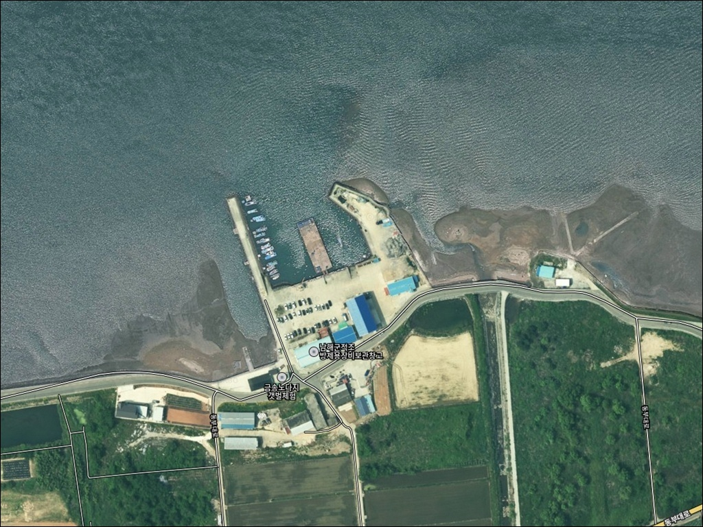
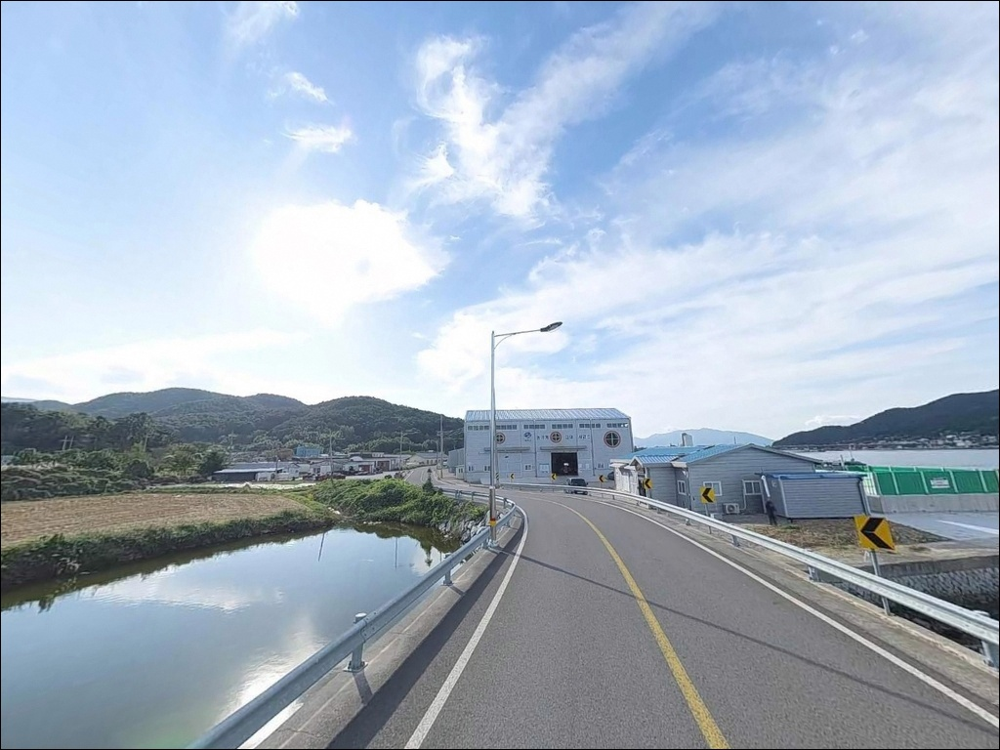
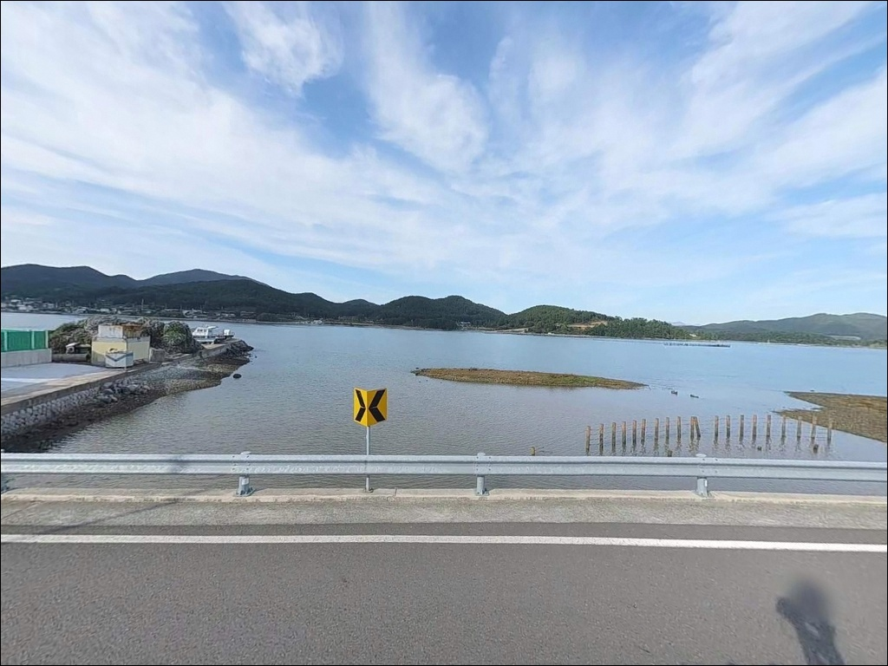
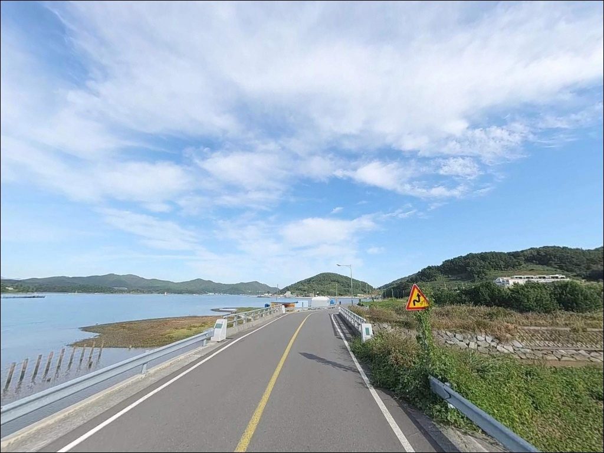
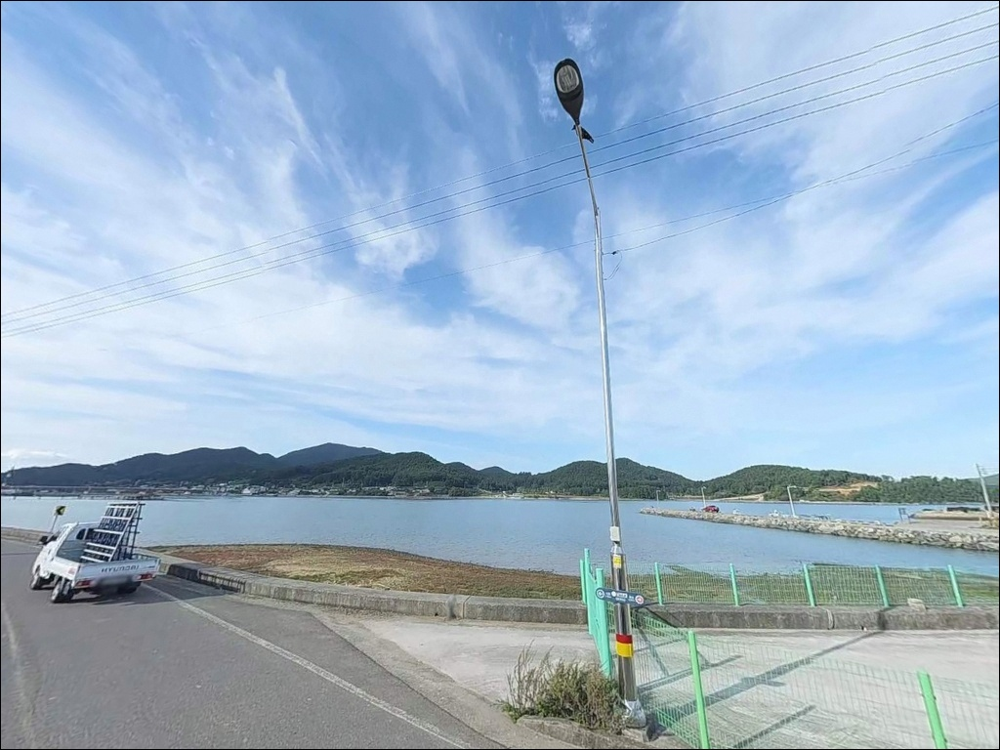
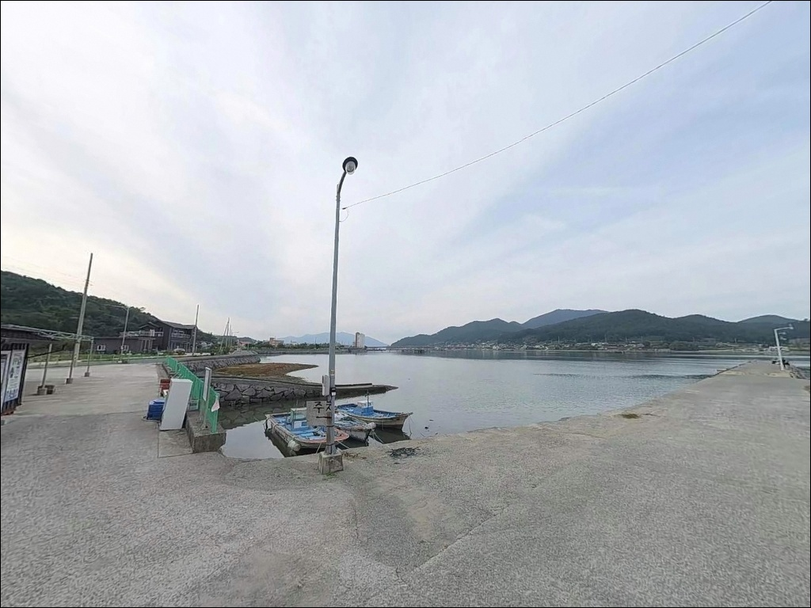
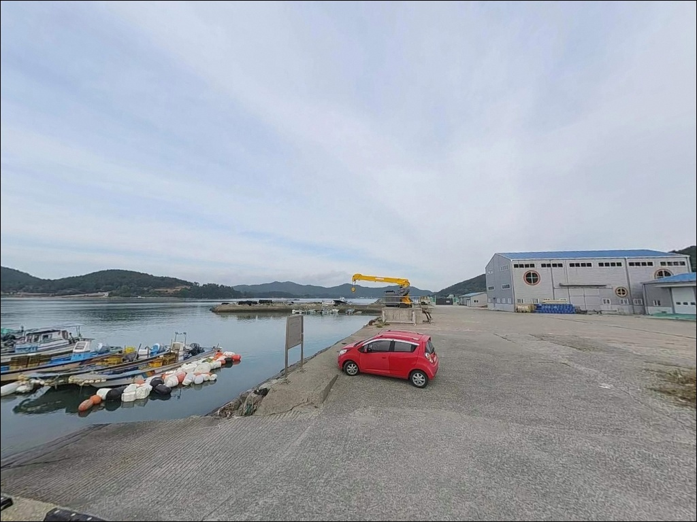
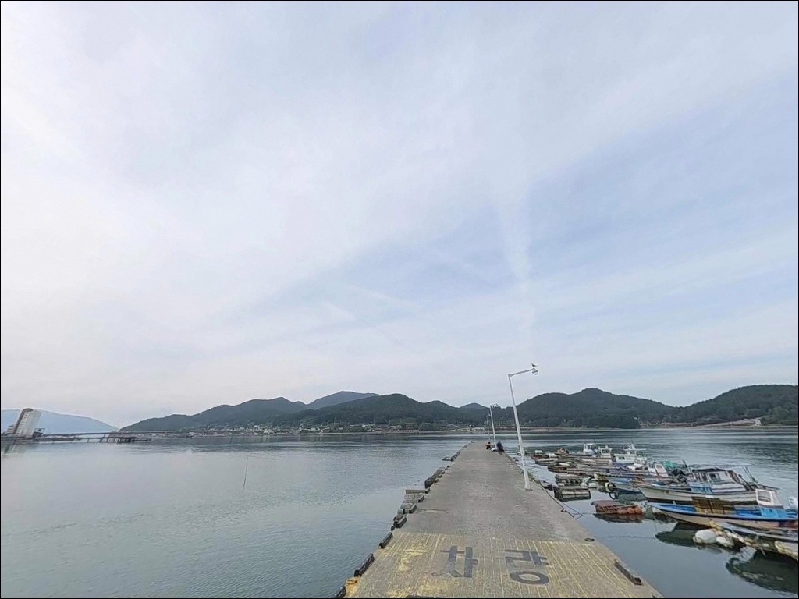
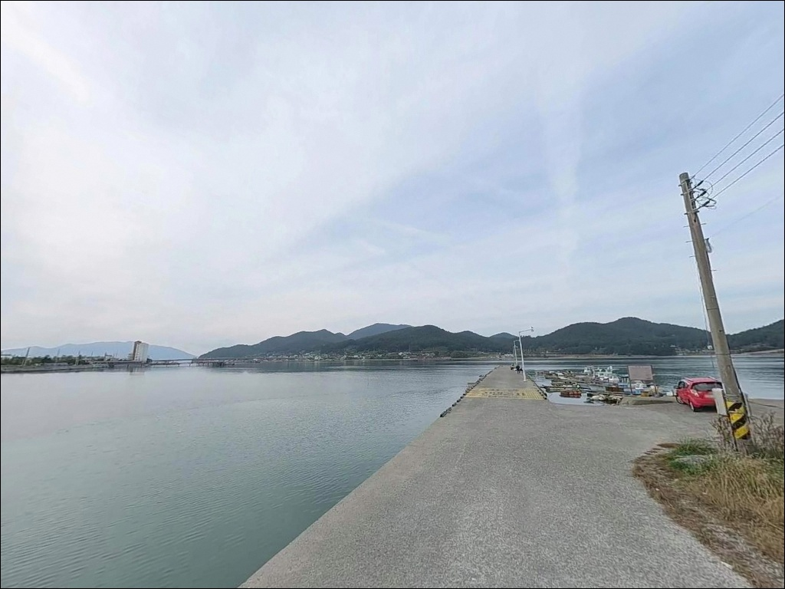

지족해협 금송방파제 외항 원투낚시, 30호 봉돌 없으면 안 찍히는 바닥


포인트 안내
금송방파제
경남 남해군 삼동면 금송리 706-1
지족해협 조류를 무시하고 외항에 채비를 넣으면
사리 전후에는 어떤 방식으로도
바닥 탐색이 불가능해집니다.
내항과 외항의 수심·조류 조건이 완전히 달라,
자리 선택을 잘못하면 낚시 방식 자체가
지형과 맞지 않는 상황이 됩니다.
경남 남해군 삼동면 금송리,
남해도와 창선도 사이 지족해협 라인에 위치한
금송방파제는 내항과 외항을 갖춘
소형 어항 방파제입니다.
내항은 정온 수역에서 가벼운 생활낚시가 가능하고,
외항은 해협 조류를 직접 받는 구조로
원투낚시와 에깅 중심 공략에 어울리는 곳입니다.
이 글은 금송방파제의
내·외항 구분 기준, 낚시 방식별 공략 조건,
진입 여건과 차박 환경에 집중합니다.
조황 단정이나 특정 어종 보장은
이 글의 범위에 포함되지 않습니다.

1. 진입 동선과 포인트 접근 여건
금송방파제는 삼동면 해안도로(동부대로)에서
마을 안길을 통해 접근하는 구조입니다.
해양고등학교 뒤편에서 이어지는 해안도로가
방파제 인근까지 연결되어 있어
전 구간이 포장 도로로 차량 진입이 가능합니다.
다만 마을 안쪽 구간은 폭이 좁아
대형 캠핑카 또는 차폭이 넓은 차량이라면
출발 전에 위성지도로 진입로를
미리 확인하는 편이 안전합니다.
승용차·SUV 기준으로는
방파제 기저부까지 직접 접근이 가능합니다.
주차는 방파제 시작 지점 콘크리트 부지에
3~4대 수준이 가능하며,
공간이 협소하거나 어선 하역 작업과 겹칠 경우
마을 진입로 갓길 공간을 활용하는 방식이 일반적입니다.
방파제 끝단까지 차량 진입은 가능하나
회차 공간이 넉넉하지 않아
입구에서 미리 방향을 돌려 진입하는 편이 효율적입니다.

2. 차박 환경과 야간 체류 여건
금송방파제 일대는 금송리 마을이
항 뒤편에 붙어 있는 소규모 어촌 구조입니다.
완전 외딴 포인트가 아니라
민가와 가까운 생활형 방파제이므로,
야간 차박 시에는
차량 소음·라이트·음악을 최소화하는
스텔스 매너가 기본입니다.
항만과 해안도로 라인에는 어항 조명과
일부 체험시설 조명이 있어
완전 암흑 환경은 아닙니다.
방파제 끝단 구간은 조명이 약한 편이므로
야간 낚시 시 헤드랜턴은 필수이며,
외항 방향은 해협 특성상
바람 영향을 받는 날씨에 주의가 필요합니다.
낚시를 마치고 조용히 하룻밤 머무는 용도로는
나쁘지 않은 구조이나,
주차 공간이 한정적인 만큼
여러 대가 함께 움직이는 경우라면
사전에 공간 여유를 확인하고 가는 편이 좋습니다.


3. 주변 편의시설 및 인프라 현황
금송방파제 바로 인근에는
편의점이나 공중화장실을 기대하기 어렵습니다.
화장실의 경우 차량으로 5분 거리인
지족리 방면 공공시설을 이용해야 합니다.
식수·얼음·채비 소품은
출발 전 삼동면 소재지에서 보급해두는 방식이
현실적인 준비입니다.
반경 3km 이내인 삼동면 지족리 방면에는
낚시용품점이 확인되어 미끼 구입과
현지 조황 문의가 가능합니다.
동부대로를 따라 삼동면 일대에
식당·편의점·숙박 시설이 분포해 있어
낚시 후 식사를 해결하기에
접근 인프라는 비교적 양호한 편입니다.
방파제 인근에는 금송 노다지 갯벌체험장이 위치하여
가족 단위 방문자라면 낚시와 함께
갯벌 체험도 연계할 수 있는 구조입니다.
응급 상황 시 삼동면 보건지소 방향으로
이동 동선을 미리 파악해두는 것이 기본입니다.

진입 전 반드시 점검해야 할 준비사항
금송방파제 방문 전에 가장 먼저 확인할 것은
물때입니다.
지족해협은 조류가 강한 해역으로,
사리 전후에는 채비가 조류에 휩쓸려
바닥 탐색이 불가능해질 수 있습니다.
바다타임에서 삼동면 일대 물때를 확인하고
중들물~중썰물 타이밍을 기준으로
출발 시각을 잡는 것이 기본 전략입니다.
외항 공략 시 사리 물때에는
30호 이상의 무거운 봉돌 준비가 필수입니다.
인근 해역에 암반 여가 분포하는 구간이 있어
합사 사용 시 밑걸림이 발생할 수 있으니
여분 채비는 넉넉하게 챙기는 편이 좋습니다.
방파제 인근은 죽방렴(국가 명승 제71호) 시설이
조망되는 해역입니다.
낚시 채비가 죽방렴 시설에 걸리지 않도록
캐스팅 방향에 주의하는 것이 기본 매너이며,
구명조끼는 방파제 진입 전 반드시 착용합니다.

5. 지족해협 조류를 품은 지형 기반 낚시 여건
금송방파제의 핵심은 내항과 외항의
지형 조건이 완전히 다르다는 점입니다.
내항 쪽은 파도가 차단된 정온 수역으로
수심이 얕고 방파제 사면을 따라
암반 지형이 형성되어 있습니다.
외항은 지족리 앞바다 방향으로 열려 있어
조류 흐름이 직접 전달되는 구조입니다.
외항 방파제 끝단 기준으로
수심은 6~8m 내외로 형성됩니다.
지족해협 특성상 창조류와 낙조류가 교차하며 빠르게 흐르고,
물돌이 타이밍인 중들물·중썰물 구간에
입질이 집중되는 패턴이 나타납니다.
조류가 흐르는 물골을 타고 회유성 어종이 지나는
길목 구조를 이 방파제가 형성하고 있습니다.
내항 암반 사면 주변은 볼락 등
소형 어종이 서식하기 좋은 지형 조건입니다.
봄·가을에는 수온 변화에 따른 어류 회유가
이 해협 라인에서 뚜렷하게 나타나는 편으로,
시즌에 맞춰 출조하면 다양한 어종과
마주칠 수 있는 가능성이 있습니다.
출조 전에 삼동면 일대 최신 조황을
꼭 검색해 보시기 바랍니다.


6. 내항과 외항에 따른 낚시 스타일 제안
외항 방향에서 가장 잘 맞는 낚시는
원투낚시입니다.
외해 측으로 캐스팅이 가능한 구조에서
조류를 이용한 처넣기 방식이 이 지형에 어울리며,
야간에는 붕장어를 비롯한
바닥층 어종을 노리는 패턴이 형성됩니다.
조류가 강한 시간대에는 봉돌 중량을 올려
채비가 흘러내려가지 않도록 조정해야 합니다.
에깅도 이 포인트에 어울리는 방식입니다.
지족해협 인근 내만은 갑오징어 서식 여건을
갖추고 있는 해역으로,
방파제 발 앞 바닥권을 중심으로
스테이 위주로 탐색하는 방식이 유효합니다.
가을 시즌 워킹 에깅 포인트로
활용 가치가 높은 편입니다.
내항 쪽은 가벼운 채비 중심의
볼락 루어낚시와 찌낚시가 잘 맞습니다.
찌낚시란 찌를 이용해 수심과 부력을 조절하며
특정 수층을 집중 공략하는 낚시 방식으로,
내항의 정온한 수면 조건에서
방파제 사면을 따라 채비를 흘리는 방식이
이 공간의 지형 조건에 적합합니다.

7. 대안 포인트와 플랜 B 동선
금송방파제 자리가 여의치 않거나
조류가 너무 강해 채비 운용이 불가능할 때는
같은 해협 라인의
전도방파제가 첫 번째 대안입니다.
금송리 해안선을 따라 인접해 있으며
A~D 포인트로 구분된 방파제 구조로
다양한 자리 선택이 가능합니다.
삼동면 동천리에 위치한 양화금방파제는
전체 길이 약 130m 규모로,
금송방파제보다 규모가 있는
방파제 포인트입니다.
남해 동부권 봄 방파제낚시 포인트로
소개되는 곳으로,
금송방파제와 묶어서 탐색하는 동선에
효율적으로 포함할 수 있습니다.
수심이 더 깊고 외항 공략이 가능한
물건방파제는 약 4.5km 거리의 대안입니다.
감성돔·벵에돔·무늬오징어 포인트로
알려진 곳으로, 금송방파제에서
조과가 기대에 못 미칠 때
이동하기에 적합한 거리입니다.
금송리 해안도로변은
노지 주차 공간이 연속으로 형성되어 있어
차박 거점을 옮겨가며 운용하기 좋은 구조입니다.

내항과 외항, 자리를 알면
금송방파제가 달라집니다
지족해협 조류가 흐르는 소형 방파제를
즐기는 낚시인이라면
금송방파제는 원투·에깅·찌낚시를
복합으로 운용하기에 어울리는 구조입니다.
외항 끝단은 지족해협 조류가 집중되는 구간으로,
물때를 맞춘 원투낚시가 가장 유효한 자리입니다.
내항과 외항의 수심 차이가 크기 때문에,
진입 전 자리 선택 기준을 먼저 정하는 것이
이 포인트의 핵심입니다.
반면 물때 확인 없이 사리 전후에 진입하거나,
봉돌 중량 준비 없이 외항에 채비를 넣으면
조류에 채비가 휩쓸려 아무것도 할 수 없는
상황이 됩니다.
죽방렴 방향 캐스팅 주의,
자급 보급 사전 완료,
물때 기준 자리 선택,
이 세 가지를 갖추고 간다면
남해 동부권 방파제 낚시의
만족스러운 출조가 될 수 있는 곳입니다.
조용한 어촌 마을 방파제에
해협 조류 소리와 함께 하룻밤을 보내는
차박 여행자라면,
스텔스 매너만 지킨다면
낚시와 차박을 동시에 즐기기 좋은
출조가 될 수 있습니다.